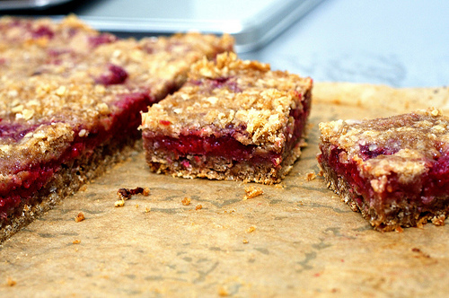

20 minutes
30
16
Ingredients
- 1 (18.25 ounce) package yellow cake mix
- 2 1/2 cups quick cooking oats
- 3/4 cup margarine, melted
- 1 cup raspberry jam
- 1 tablespoon lemon juice
Directions
1) Preheat the oven to 375 degrees. Grease a 9x13 inch pan.
2) In a large bowl, mix together oats, cake mix, and melted margarine so that it makes nice clumps and there is no dry mix left. Press 1/2 of the oats mixture evenly into the bottom the prepared pan. In a separate bowl, mix jam with water, and spread over the crust. Sprinkle the remaining oat mixture evenly over the top.
3) Bake in the preheated oven for 18 to 23 minutes, or until the top is lightly browned. Cool before cutting into bars.